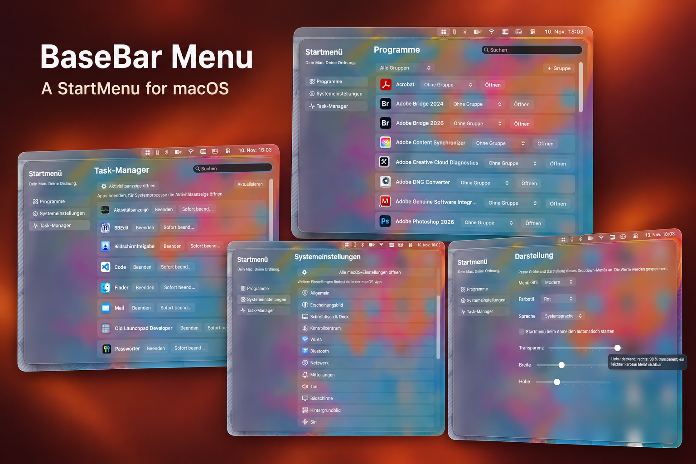
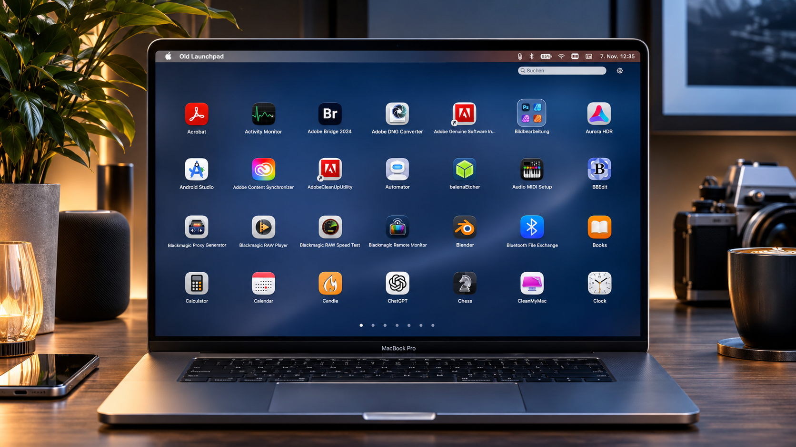

Startmenü für den Alltag
BaseBar Menu
Ein Windows-inspiriertes Startmenü, das du über das Dock, die Menüleiste oder beides steuerst – mit Suche, App-Gruppen und schnellen Systemzugriffen.

- Apps suchen, gruppieren und sortieren
- macOS-Systemeinstellungen direkt öffnen
- Laufende Apps beenden oder sofort beenden
- Dock-Menü mit Anzeigeart, Sprache und Autostart
BaseBar Menu entdecken →
Das klassische App-Raster
Old Launchpad
Die vertraute Übersicht deiner installierten Apps – als anpassbares Raster mit Seiten, Ordnern und Drag-and-drop.

- Apps visuell im Raster finden und starten
- Symbole ziehen, sortieren und in Ordner legen
- Zwischen Seiten wechseln und das Raster anpassen
- 30 Tage testen, danach einmalig 8,99 €
Old Launchpad entdecken →